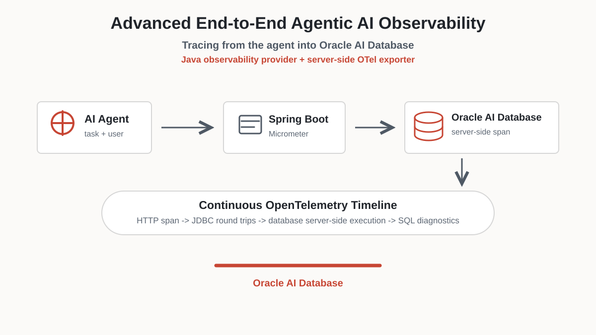
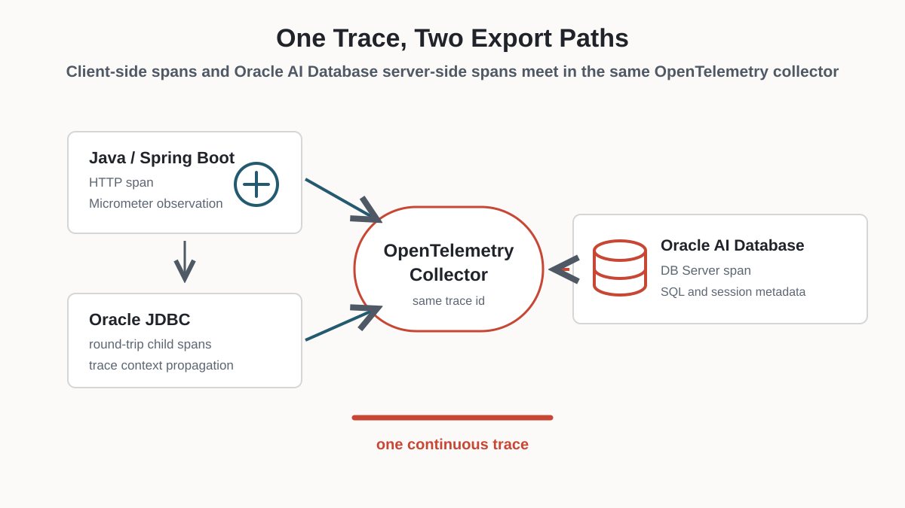
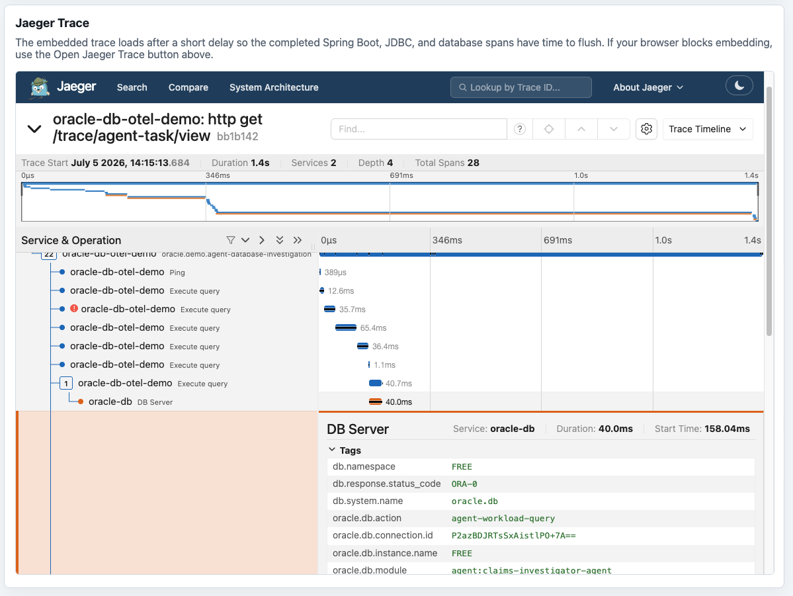
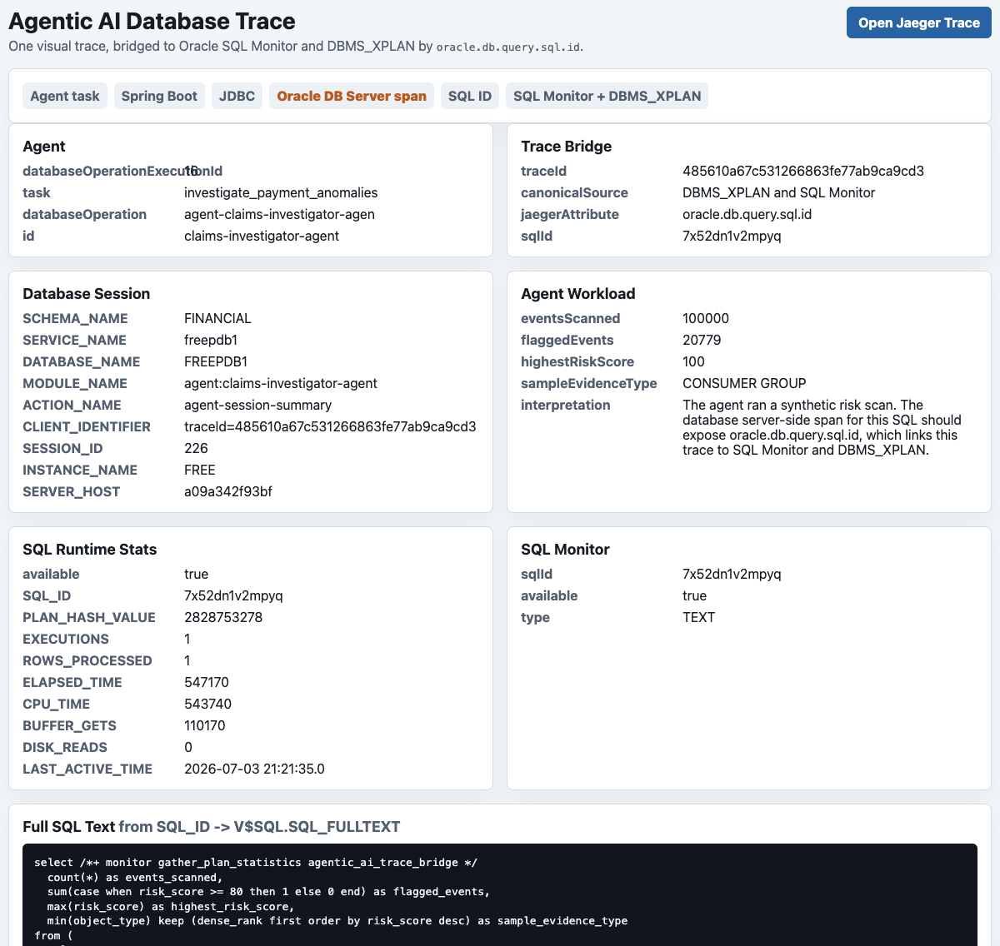
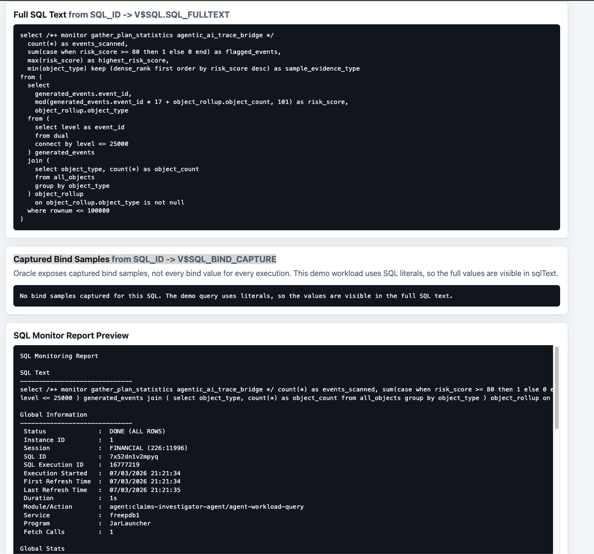
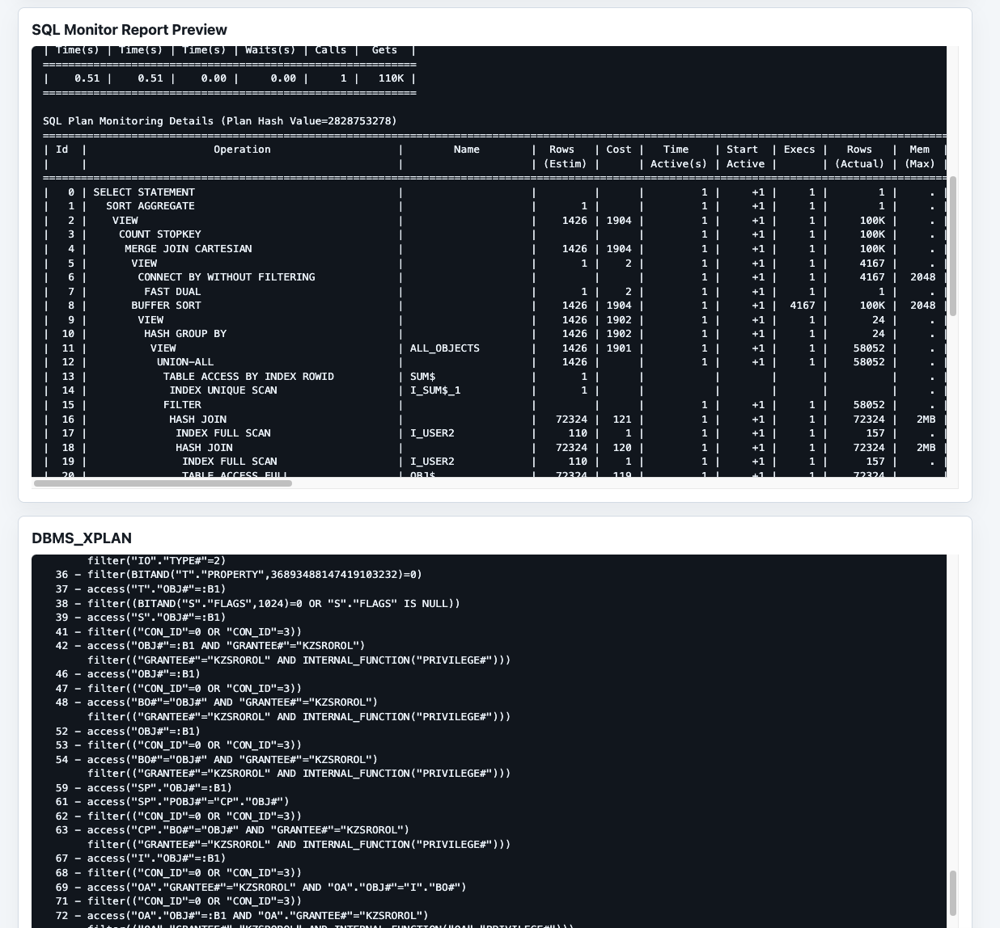

Advanced End-to-End Agentic AI Observability: Tracing from the Agent all the way into Oracle AI Database (using the Java observability provider and server-side OTel exporter)
A developer how-to for one continuous OpenTelemetry trace across a Spring Boot agent workload, Oracle JDBC, and Oracle AI Database server-side execution.
This walkthrough answers a practical question for agentic applications:
can you see one trace that starts with an AI agent request, crosses the
Spring Boot and JDBC layers, and continues inside Oracle AI Database? Yes.
With Spring Boot, Micrometer, Oracle JDBC observability providers, and
DBMS_OBSERVABILITY, the same request can appear in any
OpenTelemetry-compatible observability backend as application spans, JDBC
spans, and Oracle AI Database server-side spans. This walkthrough uses
Jaeger because it is simple to run and easy to inspect, but the same signal
can be viewed in any OpenTelemetry-compliant observability tool.
That database-internal span is the important part. Typical database observability stops at the database edge: the application trace shows that JDBC waited on the database, then the user must switch tools and manually investigate inside the database. Oracle AI Database keeps the trace continuous. Developers, DevOps teams, and security reviewers can see how long the database actually took, correlate it to database-side evidence, and use the same trace for performance profiling, troubleshooting, and security context.
All source code, configuration, scripts, and supporting docs for the demo are available in the observability folder on GitHub.

Key Takeaways
- Oracle AI Database lets the trace continue into database server-side execution instead of stopping at the database edge.
- Spring Boot and Micrometer create the application trace context, while Oracle JDBC adds database client spans.
DBMS_OBSERVABILITYexports Oracle AI Database server-side spans to OpenTelemetry-compatible observability tools; this demo uses Jaeger.- Agent metadata,
MODULE,ACTION, andCLIENT_IDENTIFIERcreate a foundation for security and audit correlation.
What We Are Building
The demo app lives in observability/springboot-oracle-db-otel-demo.
It is a Spring Boot app with two main endpoints:
| Endpoint | Purpose |
|---|---|
GET /trace/roundtrip |
Simple app-to-database trace showing Spring Boot, Micrometer, JDBC, and database server-side spans. |
GET /trace/agent-task/view |
Browser-friendly agentic demo that returns the trace id, agent id, database session metadata, SQL ID, SQL text, bind values, SQL Monitor preview, DBMS_XPLAN, and an embedded Jaeger trace on one page. Jaeger is the demo viewer; the telemetry is OpenTelemetry-compatible. |
The intended trace shape is:
Browser or curl
-> Spring Boot HTTP span
-> Micrometer observation
-> Oracle JDBC provider spans
-> Oracle AI Database DB Server span
-> HTTPS OTLP endpoint
-> OpenTelemetry-compatible observability backend (Jaeger in this demo)


Updated Maven Dependencies and Application Instrumentation
The app uses Java 25, the latest Oracle JDBC 23.26 line available from Maven Central,
the published Maven Central ojdbc-provider-observability
artifact, and the Oracle JDBC 17 production dependency.
<properties>
<java.version>25</java.version>
<oracle.jdbc.version>23.26.2.0.0</oracle.jdbc.version>
<oracle-database.version>${oracle.jdbc.version}</oracle-database.version>
<ojdbc.provider.observability.version>1.1.0</ojdbc.provider.observability.version>
</properties>
<dependency>
<groupId>org.springframework.boot</groupId>
<artifactId>spring-boot-starter-actuator</artifactId>
</dependency>
<dependency>
<groupId>io.micrometer</groupId>
<artifactId>micrometer-tracing-bridge-otel</artifactId>
</dependency>
<dependency>
<groupId>io.opentelemetry</groupId>
<artifactId>opentelemetry-exporter-otlp</artifactId>
</dependency>
<dependency>
<groupId>com.oracle.database.jdbc</groupId>
<artifactId>ojdbc17-production</artifactId>
<version>${oracle.jdbc.version}</version>
<type>pom</type>
</dependency>
<dependency>
<groupId>com.oracle.database.jdbc</groupId>
<artifactId>ojdbc-provider-observability</artifactId>
<version>${ojdbc.provider.observability.version}</version>
</dependency>
Spring Boot Actuator creates the observation infrastructure, Micrometer
bridges those observations to OpenTelemetry, and the OTLP exporter sends
spans to the collector. The oracle-database.version property
keeps Oracle JDBC, UCP, wallet/security, and related transitive artifacts
aligned on 23.26.2.0.0.
The Oracle JDBC observability provider implements the JDBC driver
TraceEventListener interface and publishes JDBC events into
OpenTelemetry. Those events include database round trips and connection
behavior, with attributes such as connection id, database operation,
database user, tenant, and SQL ID. SQL text and connection details are
treated as sensitive and are disabled by default unless explicitly enabled.
How Do You Recreate the Setup?
The demo can run on any Linux environment or VM with enough memory for Oracle Database Free, Jaeger, an HTTPS proxy, and the Spring Boot app. You can also use an Autonomous Database in Oracle Cloud instead of a local database; the important requirements are JDBC connectivity and a database server-side exporter that can reach an HTTPS OTLP endpoint.
- Install Java 25, Maven, Git, Podman, curl, jq, and OpenSSL.
- Run Oracle Database Free on Linux, or provision an Autonomous Database in Oracle Cloud.
- Clone the source from
github.com/oracle-devrel/oracle-ai-for-sustainable-devand use theobservabilityfolder. - Start Jaeger with OTLP HTTP enabled. In the sample setup, Jaeger receives app and JDBC spans on
http://127.0.0.1:4318/v1/traces. - Put a small HTTPS proxy in front of Jaeger's OTLP endpoint for database server-side export. The sample uses NGINX as
otel-tls-proxy, forwardinghttps://otel-tls-proxy:4318/v1/tracesto Jaeger'shttp://oracle-db-otel-jaeger:4318/v1/traces. - Configure
DBMS_OBSERVABILITY, network ACLs, and the database wallet/trust path so Oracle AI Database can push server-side spans to the HTTPS OTLP endpoint. - Configure, build, and run the Spring Boot app, then open the agent task view or call the JSON endpoint to generate a trace.
sudo dnf install -y podman git java-25-openjdk java-25-openjdk-devel maven jq curl openssl
export JAVA_HOME=/usr/lib/jvm/java-25-openjdk
export PATH="$JAVA_HOME/bin:$PATH"
git clone https://github.com/oracle-devrel/oracle-ai-for-sustainable-dev.git
cd oracle-ai-for-sustainable-dev/observability/springboot-oracle-db-otel-demo
mvn -DskipTests packageKeep database credentials and runtime endpoints outside the repository:
export DB_URL='jdbc:oracle:thin:@//127.0.0.1:1521/FREEPDB1'
export DB_USERNAME='FINANCIAL'
export DB_PASSWORD='<app-user-password>'
export OTLP_TRACES_ENDPOINT='http://127.0.0.1:4318/v1/traces'
export TRACE_SAMPLE_PROBABILITY=1.0
export ORACLE_JDBC_SERVER_TELEMETRY_TRACES_ENABLED=true
export ORACLE_JDBC_SERVER_TELEMETRY_LOGGING_ENABLED=false
export ORACLE_JDBC_TRACEPARENT_CLIENT_INFO_ENABLED=true
export ORACLE_JDBC_TRACELEVEL_CLIENT_INFO_ENABLED=truejava -jar target/springboot-oracle-db-otel-demo-0.0.1-SNAPSHOT.jar
curl -sS http://127.0.0.1:8080/trace/roundtrip | jq .
curl -sS \
'http://127.0.0.1:8080/trace/agent-task?agentId=claims-investigator-agent&task=investigate_payment_anomalies' \
| jq .For the cohesive browser view, open:
http://127.0.0.1:8080/trace/agent-task/view?agentId=claims-investigator-agent&task=investigate_payment_anomaliesHow Do the Spring Boot and JDBC Spans Get Created?
The Oracle JDBC OpenTelemetry extensions expect the application to already have an active OpenTelemetry context. They do not create the root application trace by themselves. In this demo, Spring Boot Actuator and Micrometer provide the HTTP and application observations, and the Oracle JDBC provider adds child spans for JDBC driver events such as database round trips. The provider also propagates the trace context to Oracle AI Database so the database can export its server-side span into the same trace.
If you do not want to add application instrumentation directly, use the OpenTelemetry Java agent for zero-code Java instrumentation. The Oracle JDBC extensions can then add database round-trip spans as children of the current application span and propagate that context to the server.
Spring Boot sends application and JDBC spans through OTLP HTTP. The demo sends them to Jaeger, but the same OpenTelemetry signal can be collected by any OpenTelemetry-compatible observability platform. Oracle JDBC provider properties enable the JDBC trace listener and identify the Java service in the collector.
spring:
application:
name: springboot-oracle-db-otel-demo
datasource:
url: ${DB_URL}
username: ${DB_USERNAME}
password: ${DB_PASSWORD}
oracleucp:
connection-factory-properties:
"[oracle.jdbc.provider.traceEventListener]": observability-trace-event-listener-provider
"[oracle.jdbc.provider.traceEventListener.unique_identifier]": springboot-oracle-db-otel-demo
management:
otlp:
tracing:
endpoint: ${OTLP_TRACES_ENDPOINT:http://localhost:4318/v1/traces}
tracing:
sampling:
probability: 1.0How Do We Export Database Server-Side Spans?
The database server-side exporter needs a reachable HTTPS OTLP endpoint.
The verified Linux demo uses Jaeger, which accepts OTLP HTTP on port
4318, and puts a small HTTPS proxy in front of it for database
server-side export. In the sample, that proxy is NGINX with a trusted
local certificate:
Oracle AI Database -> https://otel-tls-proxy:4318/v1/traces
otel-tls-proxy -> http://oracle-db-otel-jaeger:4318/v1/tracesReplace Jaeger with another OpenTelemetry-compatible collector or backend by changing the OTLP endpoint. The important requirement is that Oracle AI Database can reach the endpoint over HTTPS for server-side trace export.
Configure the database with DBMS_OBSERVABILITY, grant network
ACL access to the user executing the SQL session, and place the trusted
wallet where the distributed trace exporter expects it:
WALLET_ROOT/<PDB_GUID>/disttrc.
begin
dbms_observability.add_endpoint(
endpoint_type => dbms_observability.otel_traces,
endpoint => 'https://otel-tls-proxy:4318/v1/traces',
credential_name => null);
dbms_observability.enable_endpoint('https://otel-tls-proxy:4318/v1/traces');
dbms_observability.enable_service_option(dbms_observability.capture_traces);
dbms_observability.enable_service_option(dbms_observability.show_extra_metadata);
dbms_observability.enable_service(dbms_observability.all_services);
end;
/The demo also sets the KSTRC archiver for this local Oracle Database Free path:
alter system set "_kstrc_service_mask"=8 scope=both;
alter system set "_kstrc_archiver"='otel_traces://https://otel-tls-proxy:4318/v1/traces' scope=both;How Does JDBC Propagate the Trace Context?
The app uses the published ojdbc-provider-observability
dependency. It is currently necessary to force a server telemetry state
change before enabling
traces, so the driver piggybacks the telemetry state to the database.
EnumSet<OracleConnection.ServerTelemetry> requestedTelemetry =
EnumSet.of(OracleConnection.ServerTelemetry.Traces);
oracleConnection.setServerTelemetry(
EnumSet.noneOf(OracleConnection.ServerTelemetry.class));
oracleConnection.setServerTelemetry(requestedTelemetry);How Do We Make the Database Span Useful?
A generic DB Server span proves that the trace crossed into the
database, but the demo makes it more useful by setting database session
fields before the SQL runs.
begin
dbms_application_info.set_module('agent:claims-investigator-agent',
'agent-workload-query');
dbms_session.set_identifier('traceId=<trace-id>');
end;
/
In Jaeger, the orange oracle-db / DB Server span then carries
database-side evidence such as oracle.db.module,
oracle.db.action, oracle.db.session.id,
oracle.db.pdb, and oracle.db.query.sql.id.
How Do We Link the Trace to SQL Diagnostics?
The demo also captures oracle.db.query.sql.id. This is a
practical detail rather than the whole story: it gives you a direct bridge
from the visual trace to Oracle SQL diagnostics when you need to drill down.
| Evidence | Where it comes from |
|---|---|
| Visual database server span | Span attribute oracle.db.query.sql.id in the OpenTelemetry trace |
| Full SQL text | SQL_ID -> V$SQL.SQL_FULLTEXT |
| Captured bind samples | SQL_ID -> V$SQL_BIND_CAPTURE |
| Runtime plan | DBMS_XPLAN.DISPLAY_CURSOR, the SQL execution plan with optimizer steps, estimated and actual rows, I/O, memory, and timing |
| SQL Monitor report | DBMS_SQL_MONITOR.REPORT_SQL_MONITOR |


What Does the Agentic AI Demo Page Show?
The browser endpoint keeps the demo cohesive by returning the agent story, database diagnostics, and Jaeger trace on one page:
http://localhost:8080/trace/agent-task/view?agentId=claims-investigator-agent&task=investigate_payment_anomaliesThe page includes:
- Agent id and task name.
- Trace id and SQL ID bridge.
- Database session context, including module/action/client identifier.
- Application bind values used by this exact request.
- Full SQL Text heading labeled
from SQL_ID -> V$SQL.SQL_FULLTEXT. - Captured Bind Samples heading labeled
from SQL_ID -> V$SQL_BIND_CAPTURE. - SQL Monitor and
DBMS_XPLANoutput. - An embedded Jaeger trace loaded after a short delay so spans have time to flush.
What Does Success Look Like?
In the verified Linux environment, Jaeger showed a single trace containing both services:
springboot-oracle-db-otel-demo from the Java process and
oracle-db from Oracle AI Database server-side export.
{
"services": [
"oracle-db",
"springboot-oracle-db-otel-demo"
],
"ops": [
"DB Server",
"Execute query",
"Fetch a row",
"http get /trace/agent-task",
"oracle.demo.agent-database-investigation"
]
}How Can This Connect to Security and Auditing?
The observability solution can be further extended to correlate with Oracle AI Database Deep Data Security. Observability shows what the agent did; database security explains why Oracle AI Database allowed or denied it. The trace already carries the join keys we need:
trace.traceIdidentifies the distributed request.agent.ididentifies the AI actor in the application span.oracle.db.module=agent:<agent-id>identifies the same actor inside Oracle AI Database.oracle.db.actionidentifies the database phase.CLIENT_IDENTIFIER=traceId=<trace-id>gives database security and audit policy a compact correlation value.oracle.db.query.sql.idbridges the trace to SQL text, SQL Monitor,DBMS_XPLAN, and later audit records.
A security-aware version can run the same agent workload against protected tables, then show effective database user, enabled roles, policy decisions, rows allowed or filtered, and a denied-operation example. After that, a scoped audit policy can record the same actor, module, action, SQL ID, and trace id so the page shows one story: this agent made this request, Oracle AI Database enforced these policies, and the audit trail recorded it.
The trace itself is not auditing. It is observability: useful for debugging, performance, causality, and visual correlation. Auditing requires durable database records, such as Unified Auditing or Fine-Grained Auditing entries, retained under a security-controlled policy. The best pattern is to use traces to explain the execution path and audit records to prove the security-relevant facts.
A companion design note expands this direction: Agent Security Observability With Oracle AI Database.
How Can This Connect to Model Observability?
Agent observability should not stop at infrastructure traces. The same task can also be correlated with model-level telemetry: prompt, model, tool calls, retrieval steps, latency, token usage, evaluator scores, and final answer quality. Tools such as LangSmith, OpenTelemetry-based GenAI semantic conventions, or enterprise AI observability platforms can capture those model and agent workflow details.
The useful pattern is to carry the same task or trace identifier through the agent workflow, the Java service, Oracle JDBC, and Oracle AI Database. Then one investigation can answer: which agent ran, which prompt or plan it used, which tool call reached the database, how long the database took, which SQL ran, and which database security policies applied. That ties model observability, application observability, database observability, and security review into one storyline.
FAQ
Does this replace database auditing?
No. The trace is observability, not an audit trail. Use Oracle AI Database Unified Auditing or Fine-Grained Auditing when you need durable security evidence about users, roles, objects, SQL, and policy decisions.
Do I have to use Jaeger?
No. Jaeger is used here because it is easy to run and inspect, but the demo exports OpenTelemetry traces. The same approach can feed any OpenTelemetry-compatible observability tool that can receive the app/JDBC spans and the Oracle AI Database server-side spans.
What makes this different from ordinary database tracing?
Ordinary application traces often stop at the database edge. Oracle AI Database can export database server-side spans into the same trace, so the database portion is visible without breaking continuity or switching immediately to a separate diagnostic workflow.
Why frame this as an AI agent workload?
Agentic applications need explainability across application and database boundaries. Adding agent id, task, module, action, client identifier, and SQL_ID makes the trace useful for operations, security review, and future audit correlation.
References
- Source code for this demo: https://github.com/oracle-devrel/oracle-ai-for-sustainable-dev/tree/main/observability
- Oracle JDBC Observability provider: https://github.com/oracle/ojdbc-extensions/tree/main/ojdbc-provider-observability
- Oracle JDBC OpenTelemetry provider: https://github.com/oracle/ojdbc-extensions/tree/main/ojdbc-provider-opentelemetry
- Oracle
DBMS_OBSERVABILITY: https://docs.oracle.com/en/database/oracle/oracle-database/26/arpls/dbms_observability.html - Oracle SQL monitoring and tracing: https://docs.oracle.com/en/database/oracle/oracle-database/26/tgsql/monitoring-and-tracing-sql.html
- Oracle AI Database application tracing: https://docs.oracle.com/en/database/oracle/oracle-database/26/tgsql/performing-application-tracing.html
- OpenTelemetry Java agent: https://opentelemetry.io/docs/zero-code/java/agent/
- OpenTelemetry protocol exporters: https://opentelemetry.io/docs/specs/otel/protocol/exporter/
- Spring Boot tracing: https://docs.spring.io/spring-boot/reference/actuator/tracing.html